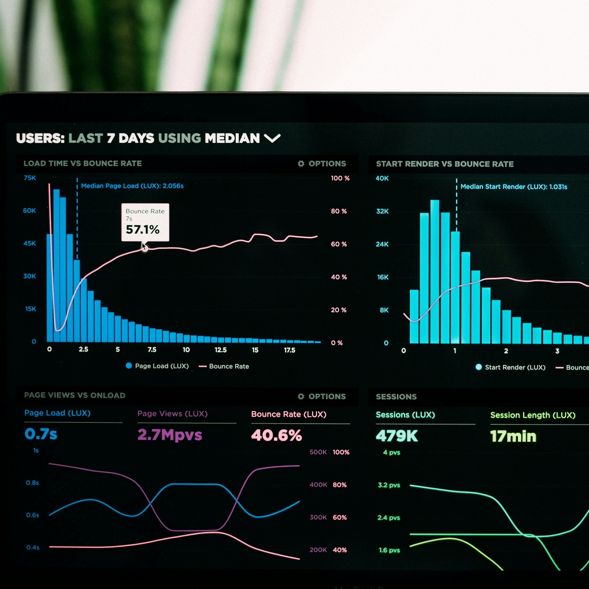

A professional website is often the first interaction customers have with your business. It must communicate credibility immediately while providing a fast, intuitive, and reliable experience across all devices.
At Afurix Solutions, we design and develop websites that combine modern design principles with robust engineering. Every website we build is optimized for performance, accessibility, and scalability so that it continues to support your business as it grows.
As organizations grow, manual processes and disconnected systems can slow operations and increase the risk of errors. Custom software solutions allow businesses to automate tasks, improve visibility, and make better decisions based on real data.
Afurix Solutions develops tailored applications designed around your workflows. Instead of forcing your organization to adapt to generic tools, we build systems that fit the way your business already operates.

Digital commerce enables businesses to reach customers beyond their physical location. A well-designed online platform not only allows transactions but also builds trust and long-term relationships with customers.
Afurix Solutions develops e-commerce systems that are secure, scalable, and designed to deliver seamless user experiences across devices.
An outdated website can quietly damage credibility. Slow loading speeds, poor mobile performance, and outdated design can cause potential customers to leave before learning about your services.
Afurix Solutions helps organizations modernize their digital presence by transforming outdated websites into modern platforms designed for performance, usability, and long-term growth.
Different industries face unique operational and digital challenges. Afurix Solutions develops tailored platforms that address the specific needs of each sector, helping organizations operate more efficiently and engage their customers more effectively.
Consultants, legal practices, and service-based businesses rely on credibility and client communication. We develop professional websites, client portals, and booking systems that streamline engagement and enhance trust.
Retail businesses need seamless digital storefronts that allow customers to browse, purchase, and interact with products easily. We build secure online stores and inventory systems that simplify online selling.
Startups require scalable platforms that support rapid growth. Afurix helps early-stage companies build MVPs, web applications, and digital platforms that evolve alongside their business.
Educational institutions and training providers require digital tools that support learning and administration. We develop platforms that simplify course management, student engagement, and online learning.
Non-profits require digital platforms that communicate their mission, engage supporters, and manage donations effectively. We design systems that help organizations increase their impact.
Many local businesses still lack strong digital visibility. Afurix helps companies establish a professional online presence that attracts new customers and strengthens credibility.
Understanding your business goals, workflows, and technical needs.
Designing system architecture and defining the user experience.
Building the platform using modern frameworks and technologies.
Deployment, optimization, and ongoing improvements.